Kompaniya qo'llanmasi¶
Ushbu bo'limda kompaniyani ro'yxatdan o'tkazish, balansni to'ldirish, xodimlar qo'shish va ularning xarajatlarini boshqarish tushuntiriladi.
Ro'yxatdan o'tish¶
Oldindan tayyorlang
Ro'yxatdan o'tish uchun inbiz.uz platformasida tasdiqlangan yuridik shaxs (kompaniya) hisobingiz va uning e-imzo sertifikati bo'lishi kerak.
- https://qr.ol.uz/uz/register sahifasiga kiring.
- «qr.ol.uz'dan qanday foydalanasiz?» degan savolga Kompaniya variantini tanlang.
- Kompaniya sifatida davom etish tugmasini bosing — sizni inbiz platformasiga yo'naltiradi.
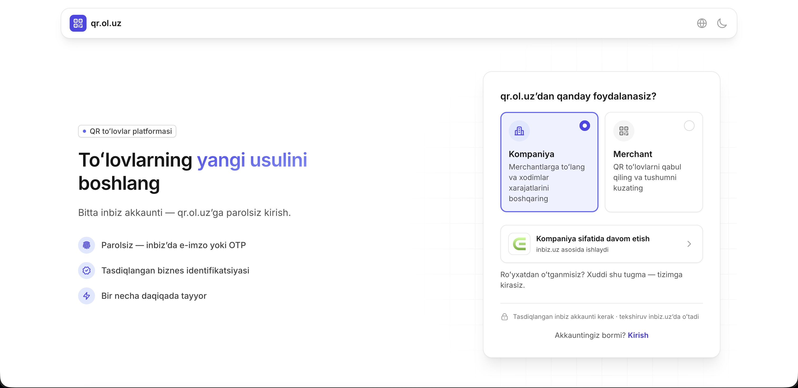
Avval ro'yxatdan o'tganmisiz?
Xuddi shu tugma orqali tizimga qayta kirasiz — alohida «kirish» jarayoni shart emas.
inbiz orqali kirish¶
inbiz sahifasida kompaniyangizning e-imzo sertifikatini tanlab, Shu sertifikat bilan kirish tugmasini bosing. Agar inbiz'ga oldinroq kirgan bo'lsangiz, bu qadam avtomatik o'tib ketiladi.
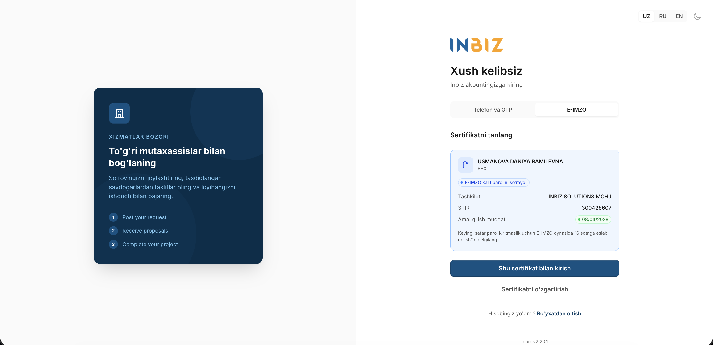
Keyin inbiz sizdan qr.ol.uz bilan ma'lumot ulashishni tasdiqlashni so'raydi. To'g'ri kompaniya tanlanganiga ishonch hosil qiling va davom etish tugmasini bosing.
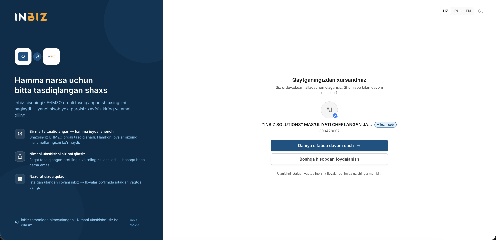
Telefon raqamini tasdiqlash¶
inbiz'dan qaytganingizdan so'ng qr.ol.uz telefon raqamingizni so'raydi. Bu — oxirgi qadam: raqamingizni tasdiqlasangiz, keyingi safar e-imzosiz, faqat telefon raqami va SMS kod bilan kira olasiz.
Bu qadamni o'tkazib yubormang
Telefon raqamini tasdiqlamasangiz, har safar e-imzo bilan kirishga to'g'ri keladi.
- Telefon raqamingizni kiriting va Kod yuborish tugmasini bosing.
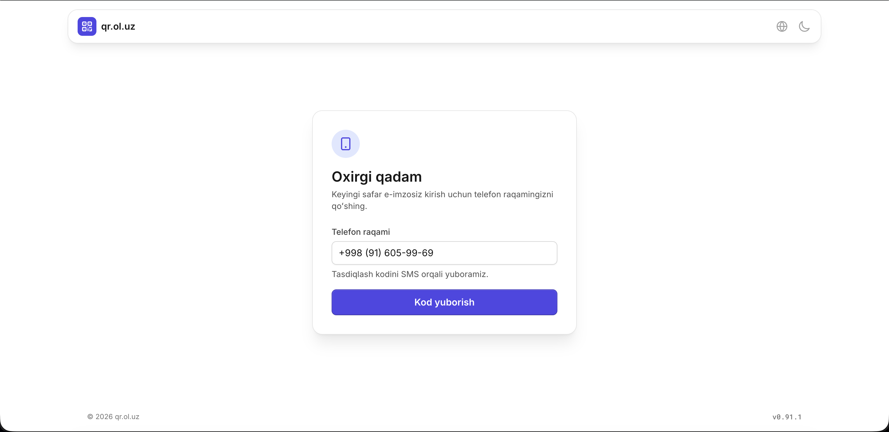
- SMS orqali kelgan 6 xonali kodni kiriting va Tasdiqlash tugmasini bosing.
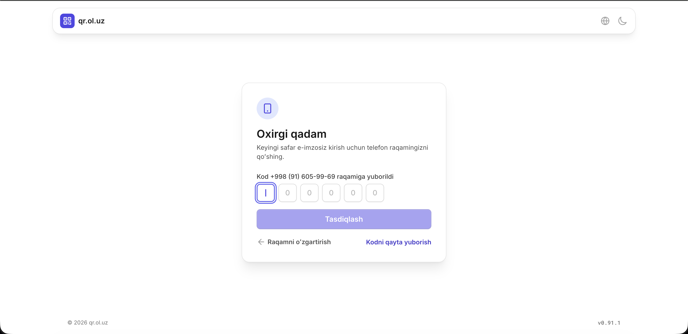
Shu bilan ro'yxatdan o'tish yakunlanadi va siz kompaniya ish maydoniga o'tasiz.
PIN kod o'rnatish¶
Birinchi qiladigan ishingiz — PIN kod o'rnatish. Bu 5 xonali raqamli kod bo'lib, platformadagi muhim amallarni (masalan, to'lovlarni) tasdiqlash uchun ishlatiladi.
- Chap menyudan Sozlamalar sahifasiga o'ting (qr.ol.uz/uz/settings).
- To'lov PIN kodi bo'limida o'rnatish tugmasini bosing va 5 xonali kodingizni kiriting.
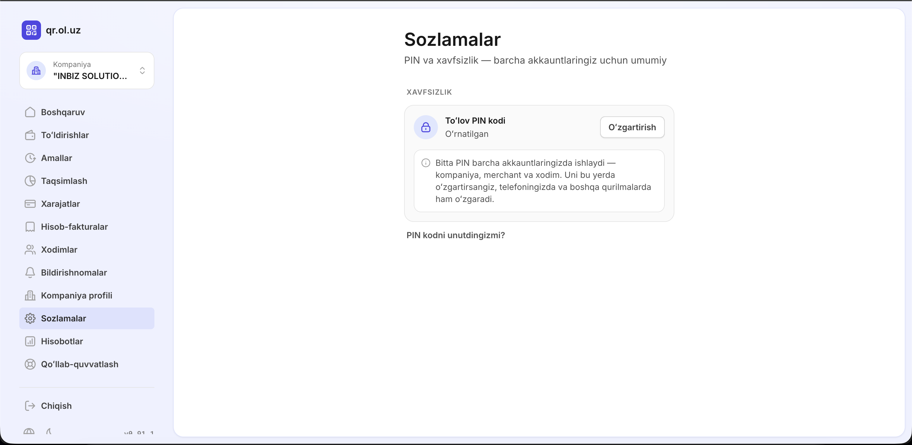
Bitta PIN — barcha akkauntlar uchun
PIN kod akkauntga emas, shaxsingizga bog'lanadi: kompaniya, merchant va xodim akkauntlaringizning barchasida bitta PIN ishlaydi. Uni bir joyda o'zgartirsangiz, hamma qurilma va akkauntlarda o'zgaradi.
Boshqaruv paneli¶
Boshqaruv (bosh sahifa) — kompaniya moliyasining umumiy ko'rinishi:
- Umumiy balans — kompaniya hamyonidagi jami mablag' va hamyon raqami;
- Xodimlarga taqsimlangan — xodimlarga ajratib berilgan mablag'lar yig'indisi;
- Taqsimlash uchun mavjud — hali taqsimlanmagan, bo'sh mablag';
- Eng katta taqsimotlar — eng ko'p mablag' ajratilgan xodimlar ro'yxati.
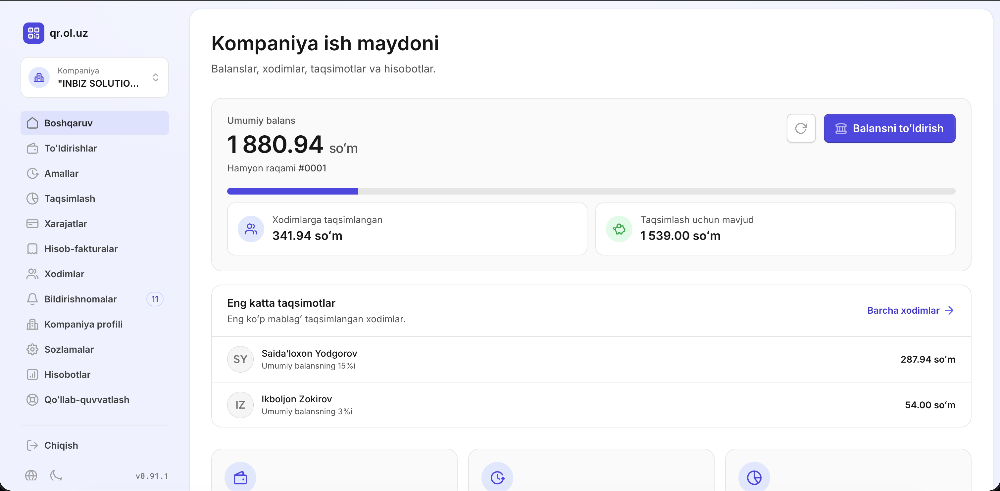
Balansni to'ldirish¶
Kompaniya balansi bank o'tkazmasi orqali to'ldiriladi:
- Boshqaruv panelidagi Balansni to'ldirish tugmasini bosing — to'ldirish bo'yicha ko'rsatma ochiladi.
- Ko'rsatmada qr.ol.uz platformasining bank rekvizitlari (hisob raqami, MFO, STIR) ko'rsatilgan. Kompaniyangiz bank hisobidan aynan shu hisobga o'tkazma qiling.
- To'lov izohida hamyoningiz ID raqamini (masalan,
#0001) albatta ko'rsating — usiz to'lovingiz qaysi kompaniyaga tegishli ekanini aniqlab bo'lmasligi mumkin.
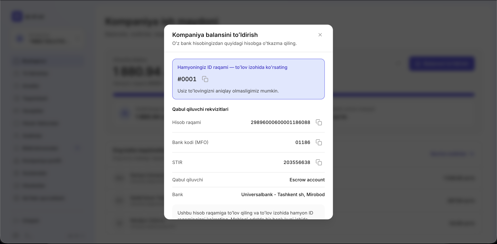
O'tkazma bankdan o'tgach, mablag' kompaniya balansingizga avtomatik qo'shiladi.
Xodimlarni boshqarish¶
Xodim qo'shish¶
Chap menyudan Xodimlar sahifasiga o'ting. Bu yerda kompaniyangizga qo'shilgan barcha xodimlar ro'yxati ko'rinadi.
Yangi xodim qo'shish uchun Xodim qo'shish tugmasini bosing va quyidagi ma'lumotlarni kiriting:
| Maydon | Izoh |
|---|---|
| Familiya, Ism | Majburiy |
| Otasining ismi | Ixtiyoriy |
| JSHSHIR (PINFL) | 14 xonali shaxsiy identifikatsiya raqami |
| Telefon raqami | Xodim shu raqam orqali SMS kod bilan tizimga kiradi |
| Lavozim | Ixtiyoriy |
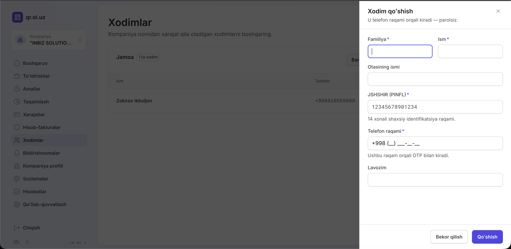
Xodimga parol kerak emas
Xodim siz kiritgan telefon raqami orqali qr.ol.uz saytiga kiradi — SMS kod bilan, parolsiz.
Xarajat ruxsatlarini sozlash¶
Xodim qatoriga bossangiz, o'ng tomonda Xodim xarajatlari oynasi ochiladi. Bu yerda:
- Ajratilgan balans — xodimga ajratilgan mablag' miqdori;
- Kompaniya balansiga ruxsat — yoqilsa, xodim o'zining ajratilgan mablag'i bo'lmaganda umumiy kompaniya balansidan to'lov qila oladi;
- Xarajat toifalari — xodim qaysi turdagi do'konlarda to'lov qila olishini belgilaydi (masalan, Avtoservis, Ovqatlanish, Yoqilg'i). Kerakli toifalarni alohida yoqing yoki Barcha toifalarga ruxsat tugmasi bilan hammasini birdan yoqing.
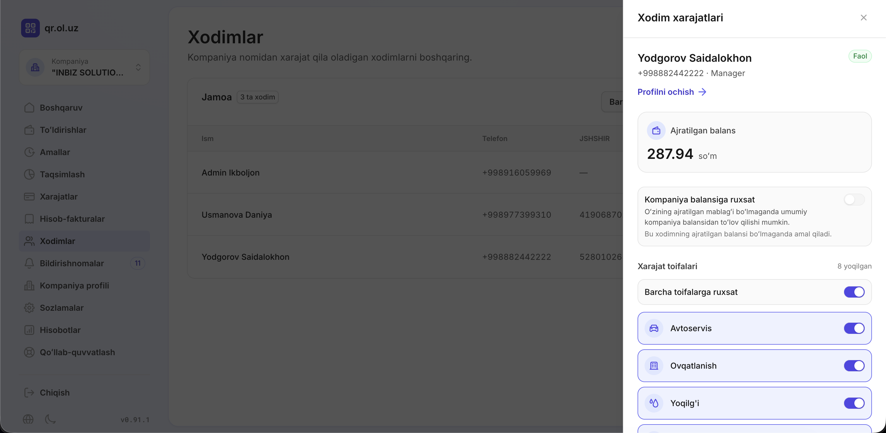
Toifa yoqilmagan bo'lsa, to'lov o'tmaydi
Xodim faqat unga yoqilgan toifalarga tegishli do'konlarda to'lov qila oladi. Hech bir toifa yoqilmagan xodim to'lov qila olmaydi.
Akkauntlar o'rtasida almashish¶
Agar sizning shaxsingizga bir nechta akkaunt (masalan, kompaniya rahbari va ayni paytda xodim) biriktirilgan bo'lsa, ular o'rtasida chiqib-kirmasdan almashishingiz mumkin:
- Chap yuqoridagi akkaunt kartasini bosing.
- Ochilgan Akkauntni almashtirish oynasida barcha akkauntlaringiz ro'yxati ko'rinadi — keraklisini tanlang.
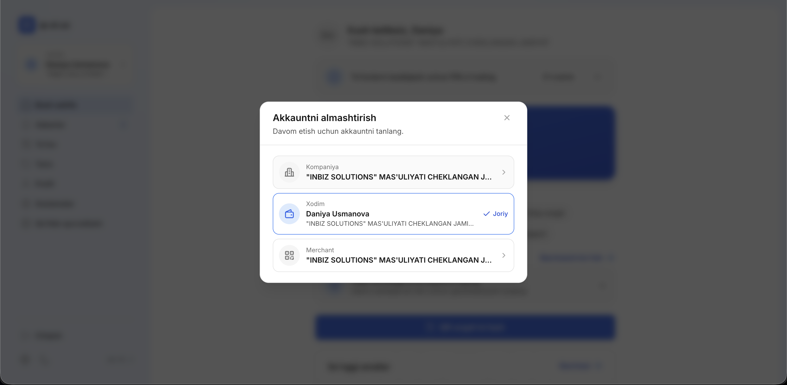